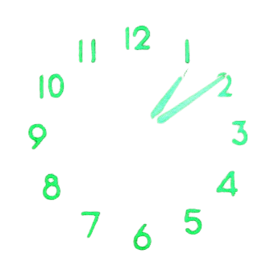

RADIUM EBAY SEARCH
Go
Multi
Random
Open all related to:
-- choose --
Antique
Vintage
Clock
Watch
Pocket Watch
Luminous
Open All
antique clock vintage clock antique timer vintage timer antique desk clock antique mantel clock darkroom timer darkroom clock antique baby ben antique big ben antique pocket ben antique general electric clock antique telechron antique westclox vintage westclox antique seth thomas vintage seth thomas antique aircraft instruments antique auto clock vintage auto clock 8 day clock military clock WW2 clock antique submarine clock civil defense antique watch vintage watch antique mechanical watches antique pocket watch vintage pocket watch military watch military pocket watch WW2 watch USSR watch antique soviet watch swiss military watch Bulova watch Bulova watch hands military watch hands radiolite glo-ben BESTFIT hands antique watch lot vintage watch lot antique pocket watch lot vintage pocket watch lot antique stopwatch vintage stopwatch luminous luminous clocks luminous watch luminous dials vintage luminous antique luminous watch-dial painting antique gauge vintage gauge military gauge WW2 gauge military aviation instrument military aeronautical instrument military maritime instrument antique aeronautical instruments antique maritime instruments antique submarine gauge antique submarine dial antique anti-aircraft dial antique anti-submarine dial military aviation dial antique engine meter antique pressure gauge antique compass lensatic compass antique flight compass Gilbert U-238 Atomic Energy Laboratory bendix dosimeter bendix aircraft hamilton standard aircraft radium rad radioactive radioactive demonstration kit geiger source scintillation nuclear tritium polonium plutonium uranium uranium glass vaseline glass fiestaware revigator undark marvelite radium ephemera radium quack medicine radium cigarettes tho-radia united states radium corporation radium dial company biltmore pocket watch radiography history radioactive history antique clock lot vintage clock lot antique watch lot vintage watch lot antique pocket watch lot vintage pocket watch lot